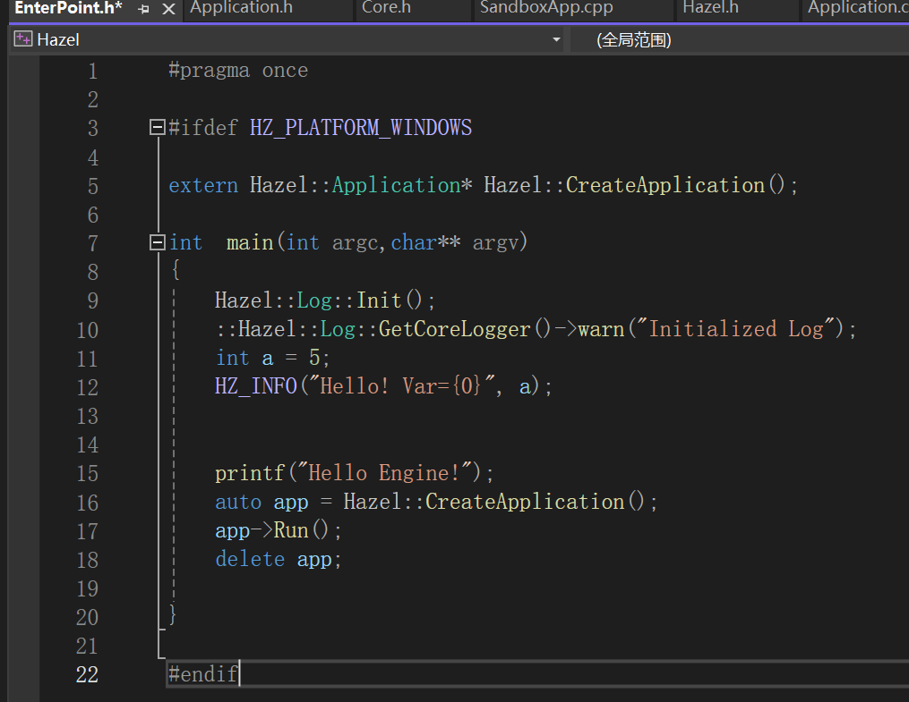

HazelEngine笔记1
1.项目配置
在vs中创建Hazel项目，然后打开“项目属性 -> 配置属性 -> 常规”中设置一下
- 配置类型： 选择**.dll**
在配置为Dynamic Library时，项目输出的文件是一个DLL文件，其他程序可以在运行时加载和使用它。通常会生成一个
.dll文件和一个对应的.lib文件（用于在编译时链接DLL）。DLL (Dynamic Link Library) 是包含可执行代码和数据的二进制文件，在程序运行时动态加载到内存中。
DLL文件中包含的代码和资源在程序运行时才会被加载使用，因此在编译和链接阶段，它不会直接参与到应用程序的构建中。
对于使用DLL的项目来说，LIB文件并不是静态链接库，而是一个“导入库”（import library）。这个LIB文件不包含DLL的实际实现代码，而是包含指向DLL中的函数或数据的引用和符号信息。
当你在Visual Studio中设置项目生成DLL时，Visual Studio同时会生成一个对应的LIB文件。这个LIB文件的作用是告诉链接器：当其他项目引用此库时，链接器应如何找到和使用对应的DLL中的函数和数据。
- 设置hazel项目的生成的输出目录和生成目录
输出目录：$(SolutionDir)bin\$(Configuration)-$(Platform)\$(Project)
中间目录：$(SolutionDir)bin-int\$(Configuration)-$(Platform)\$(Project)
中间目录的最终表达路径：【C:\Users\86182\Desktop\openGL\Hazel_Engine\Hazel\bin-int\Debug-windows-x86_64】
关于项目路径的常见的宏，类似的如下，查询也是非常方便
$(SolutionDir)
- 表示：解决方案文件（
.sln文件）所在的目录（即根目录）。- 例子：如果解决方案文件位于
C:\Projects\MySolution\MySolution.sln，那么$(SolutionDir)将展开为C:\Projects\MySolution\。好处：就是项目方便移植，宏会实时获取一些地址，方便项目在其他电脑等运行。
输出目录 是项目编译和链接后的最终产物存放的目录，通常用于存储可执行文件（.exe）、动态链接库（.dll）、静态库（.lib）等。
.lib和.dll我们上面都解释过了
pdb文件是 Program Database（程序数据库）文件，用于存储调试信息。它由编译器和链接器在编译和链接过程中生成，帮助开发者在调试时能够更好地理解和分析代码的执行情况。.exp文件是 Export File（导出文件），它是在生成动态链接库（DLL）或者链接某些动态库时生成的文件，它存储 DLL 中导出的符号信息，并用于生成.lib文件。它存储的是导出的函数和符号信息，并在某些情况下协助链接器处理动态库的符号解析。

中间目录 是编译过程中存放临时文件和中间文件的目录，通常是为了加速编译过程或生成最终输出文件时的辅助文件。中间目录中的文件是编译的中间产物，不是最终生成的可执行文件或库文件。
.obj文件：由编译器生成的目标文件（Object files），是源代码编译后的机器代码，但还未链接成最终的可执行文件或库。.pch文件：预编译头文件（Precompiled Headers），用于加速编译速度。它将头文件的编译结果缓存下来，避免每次都重新编译。.tlog文件：生成日志文件，记录了每次编译或链接时的详细过程。.idb文件：增量编译数据库文件，用于加速增量编译。
将Hazel加入Sandbox的引用
这里添加对Hazel的引用，这样就会自动导入对Hazel生成的.lib库了（应该是添加了寻找路径），最后只要将dll文件放在Sandbox项目下就可以使用了
_declspec(dllexport)和__declspec(dllimport)
符号导出
- 导出（Export）是指将某个函数或变量从 DLL 中暴露出来，使得其他模块能够访问和使用它。
- 当你在 DLL 中定义一个函数并使用
__declspec(dllexport)修饰时，编译器会将该函数的名称和其他相关信息（如参数类型、返回类型等）添加到 DLL 的导出表中。 - 导出表是 DLL 内部的一个数据结构，列出了所有可以被外部模块调用的函数和变量的信息。
符号导入
- 导入（Import）是指从 DLL 中使用已经导出的符号（如函数、变量或类）。
- 当你在一个项目中使用
__declspec(dllimport)修饰符时，编译器会查看相应的 DLL 的导出表，以获取符号的信息，以便在运行时正确地调用这些符号。 - 导入时，编译器会生成适当的调用代码，确保在调用函数时使用 DLL 中的实现。
命名空间namespace
在跟随这个项目的过程中，发现引擎项目有自己独立的命名空间
namespace Hazel{}
Hazel项目中的函数规范的导入和导出
- 在Hazel项目中编写一个Core.h文件
#pragma once
#ifdef HZ_PLATFORM_WINDOWS
#ifdef HAZEL_BUILD_DLL
#define HAZEL_API __declspec(dllexport)
#else
#define HAZEL_API __declspec(dllimport)
#endif // HZ_BUILD_DLL
#else
#error Hazel only supports windows!
#endif // HZ_PLATFORM_WINDOWS
为了避免在Hazel和app项目中重复写导入导出，我们就选择的利用宏处理简化这个过程，就是利用声明的.h文件和宏一次性解决。

在Hazel项目中，我们在项目属性的预处理器中加入我们需要定义的宏HAZEL_BUILD_DLL，HZ_PLATFORM_WINDOWS。因为Hazel是导出的dll文件需要选择第一个编译选项。
而在app项目中我们显然不预定义HAZEL_BUILD_DLL，就是选择将宏HAZEL_API翻译为导入。
这样我们只需要在各自的项目中引入导出目标的头文件，二者都可以使用，但是处理后的结果就适合各自使用了，Hazel是导出，而app内则是导入。
文件引用的搜索路径问题
尖括号 < >
- 用途：通常用于引用系统库或标准库中的头文件。
- 搜索路径：编译器在包含路径的系统目录中（如标准库或编译器的默认路径）查找这些头文件。通常不会在项目目录中查找。
双引号 " "
- 用途：用于引用用户自定义的头文件或项目内的头文件。
- 搜索路径：编译器首先在当前源文件的目录中查找头文件，然后才会到系统目录中查找。这意味着如果你在项目中有与标准库同名的头文件，编译器会优先使用项目中的头文件。
二者其实差别不是很大，都可以在引入的时候带一些路径，主要是系统目录的设置。

在项目属性页面的附加包含目录中，我们可以在其中设置系统目录的一些查找路径，有时候引入就会轻松一点，当然起点肯定时当前的项目目录。
要是引入其他项目头文件，就需要类似**..\Hazel\vendor\spdlog\include;**回退到解决方案目录之类的。
当生成Hazel的dll文件，记得将dll文件放入app输出文件所在内供其使用。
注意路径和位置的相关关系。
用 int main(int argc, char** argv) 来接受命令行参数相比于普通的 int main() 有一些显著的方便之处，特别是对于特定应用场景。以下是它的好处以及为什么有时我们选择更简单的 int main()：
1. 接受和处理命令行参数
更灵活的程序控制：通过
argc和argv，你可以从命令行接受参数来控制程序的行为。这对于编写灵活的、可配置的程序非常有用。用户可以通过传递不同的参数让程序在不同的条件下执行不同的操作，而不需要修改代码。**
argc**：全称是 argument count，表示传递给程序的命令行参数的个数。包括程序名称本身，所有参数的数量都会包含在argc中。argv：全称是 argument vector，是一个指向字符指针数组的指针，表示命令行传递的所有参数。argv[0] 是程序的名称，argv[1] 到 argv[argc-1] 是传递给程序的各个命令行参数。argv本质上是一个char*数组，即每个命令行参数都是一个字符串。argv[0]：保存的是程序的名称或路径。argv[1]到argv[argc-1]：保存的是传递给程序的参数（如果有的话）。
示例
假设运行以下命令：
bash
./my_program input.txt 42
则：
argc= 3（表示有三个参数：程序名./my_program，参数input.txt和参数42）。argv[0]="./my_program"（程序名称）。argv[1]="input.txt"（传递的第一个参数）。argv[2]="42"（传递的第二个参数）。
2. 接收和处理命令行参数
argc 和 argv 的主要作用是允许程序接收和处理用户通过命令行传递的参数。这样你可以通过命令行控制程序的行为，比如：
- 指定输入输出文件。
- 传递一些控制标志（如
-debug、-verbose）来调整程序行为。 - 执行特定操作或启用某些功能。
其实就很像预处理的宏定义，帮助我们启动对应的逻辑选项。
当然你也可以输入一些你需要的路径等等等，有很多的选择根据你具体传的是什么吧。
示例：
- 调试和测试便捷：在开发过程中，特别是大型系统中，命令行参数可以用于启用/禁用特定功能，调整日志级别，或传递配置信息。这使得开发者能够快速通过命令行改变程序行为而不需要每次修改代码或重新编译程序。
--debug
参数启用调试模式：
int main(int argc, char** argv) {
bool debug = false;
for (int i = 1; i < argc; ++i) {
if (std::string(argv[i]) == "--debug") {
debug = true;
}
}
if (debug) {
std::cout << "Debug mode enabled." << std::endl;
}
// 其他代码
}
为什么有时只用
int main()？虽然
int main(int argc, char** argv)提供了更强的灵活性和控制能力，但有些情况下我们更倾向于使用简单的int main()：
- 程序不需要外部输入：如果你的程序不需要接受命令行参数，也不需要处理动态输入，那么使用
int main()足够简单、直接。例如，一个图形化的桌面应用通常不需要通过命令行传递参数，因为所有交互都通过 GUI 完成。- 简化代码：在小型项目或简易的测试代码中，没有必要处理命令行参数的情况较多。为了保持代码简洁，
int main()可以减少不必要的复杂性。- 特定平台的限制：在某些嵌入式系统或特定环境下，命令行参数不可用。在这种情况下，
int main()是标准选择。
很好奇基于Hazel项目内部声明的application类，Sandbox项目内继承定义了一个Sandbox类，并且实现了父类的CreateApplication，返回一个子类Sandbox指针，为什么Hazel项目内的Enterpoint可以这样使用
首先我们来看以下大体的示例图。
- 首先就是extern为什么找到了项目之外的函数定义
CreateApplication 函数定义在 app 项目中，但通过 extern 声明，你可以在 Hazel 引擎的代码中调用它。编译器知道这个函数存在，但链接器会负责在实际运行时解析函数的具体位置，自然及时是在另外的启动像Sandbox，最后编译的时候也会自动找到其子类的定义。
Hazel::Application 是一个基类，而 Sandbox 是从 Hazel::Application 派生的子类。
当 CreateApplication() 返回 Hazel::Application* 类型时，它实际上是返回了一个指向 Sandbox 对象的指针。
在 C++ 中，如果基类中的函数被声明为虚函数（virtual），那么即使你通过基类指针或引用调用该函数，程序仍然会调用子类的实现。这种机制叫做运行时多态。